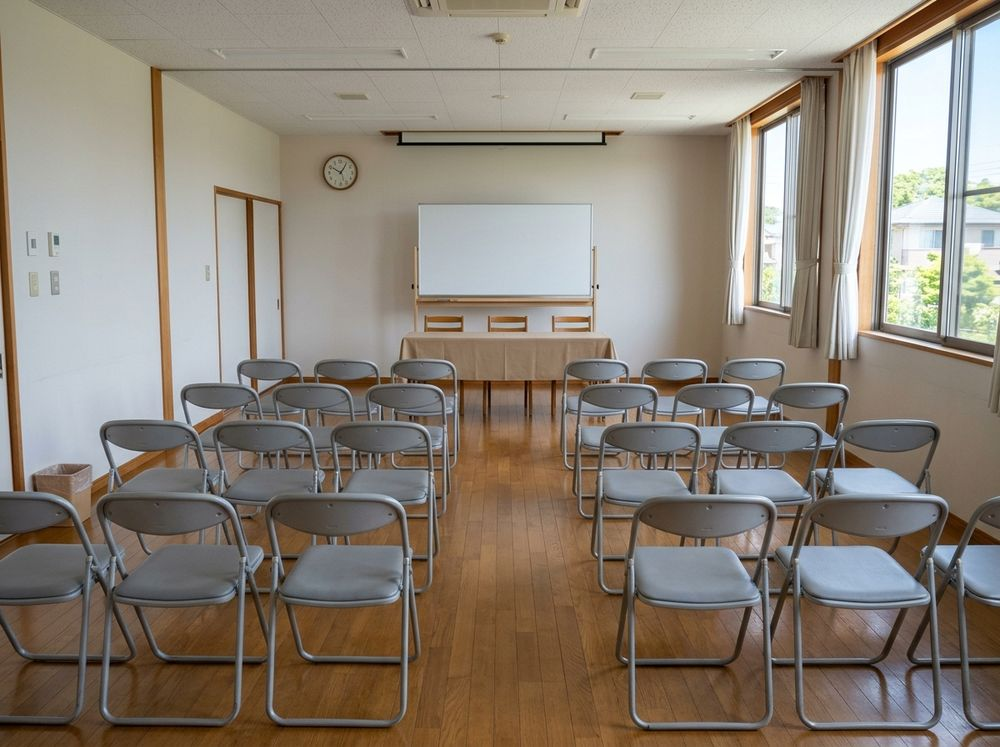
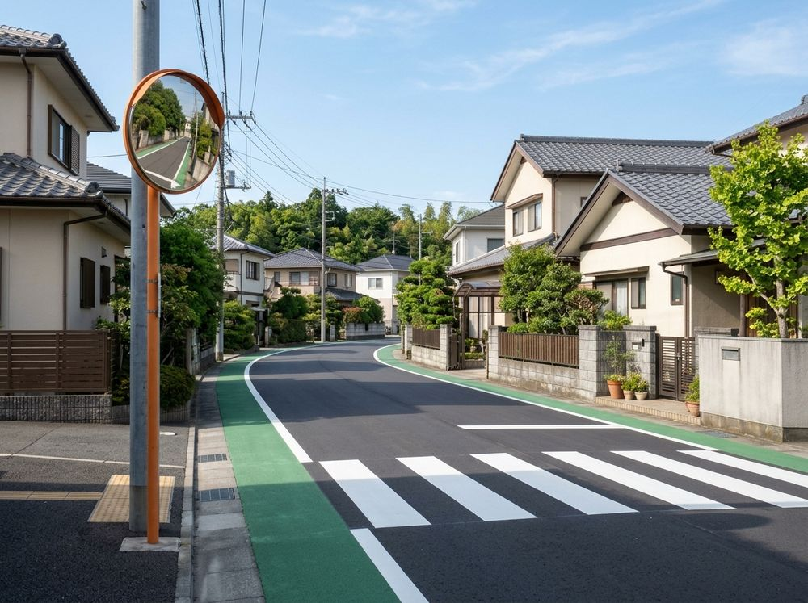

政策{{p.n}}
{{p.k}}
{{p.v}}
- {{i}}
みどり野市議会議員
暮らしの声を、市政へ。
地域を歩き、お一人おひとりの声を伺い、議会に届けます。活動の内容は、このページで随時ご報告します。
メッセージ
みどり野市で生まれ育ち、この街で働き、子育てをしてきました。通学路のこと、買い物のこと、親の介護のこと。暮らしの中で出会う小さな困りごとは、一人で抱えるには重く、行政に届けるには遠いものです。
その間に立ち、声を伺い、調べ、議会で問い、結果をお伝えする。この繰り返しが、私の仕事だと考えています。
お気づきの点がありましたら、どうぞお気軽にお寄せください。
みどり野市議会議員 早瀬 まこと
政策
政策{{p.n}}
{{p.v}}
活動

議会で取り上げたことと、その後の市の対応を、年に4回、地域の集会所でご報告しています。どなたでもご参加いただけます。
次回 2027年1月24日（日）14:00〜 みどり野台集会所

保護者や見守りの皆さんと通学路を歩き、見通しの悪い交差点や、消えかけた横断歩道を確かめています。結果は市に伝え、対応をご報告します。
これまで 3つの小学校区で実施
活動報告
プロフィール
事務所のご案内
〒000-0000 ◯◯県みどり野市みどり野台0-0-0
電話 00-0000-0000
受付 平日 10:00〜17:00
市政へのご意見、地域の困りごと、市政報告会のお申し込みを、このページからお送りいただけます。
いただいた内容は、早瀬まこと本人が拝見します。お返事までに、数日いただくことがあります。
内容の種類
内容をご入力ください。
お名前をご入力ください。
お返事
ご連絡先をご入力ください。
お預かりした個人情報は、お返事のためだけに使います。
内容を拝見し、お返事をご希望の方には、順にご連絡します。
見本のため、実際には送信されていません。